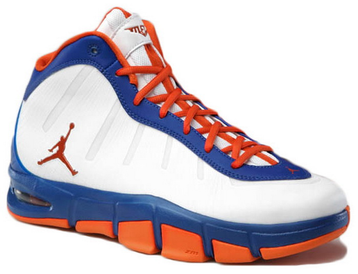
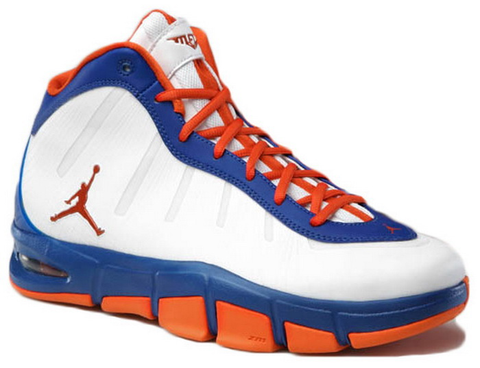

25 ІМЕННИХ БАСКЕТБОЛЬНИХ КРОСІВОК
Перші іменні спортивні кросівки з'явилися в 1984 році, коли Майкл Джордан підписав контракт з компанією Nike, щоб носити кросівки Air Jordans — ця модель миттєво стала хітом продажів і навіть після виходу з баскетболу «Його Повітря» продовжувала залишатися бестселером. З того часу носити іменні кросівки стало поширеною практикою в НБА — практично жодна зірка не обходиться без багатомільйонного контракту з Nike або Reebok на розробку власної моделі з унікальним дизайном. Нижче — список із двадцяти п'яти зірок баскетболу та їхніх іменних моделей кросівок.
Air Jordan III
Reebok The Question Mid
Adidas Mutombo
FILA Grant Hill
Nike Zoom Kobe V
Converse Aero Jam
 Reebok Kamikaze II
Reebok Shaqnosis
Reebok Shaqnosis
Reebok Kamikaze II
Reebok Shaqnosis
Reebok Shaqnosis
 Nike Zoom Flight V
Nike Zoom Flight V
 Adidas T-MAC 2
Nike Air Pippen I
Adidas T-MAC 2
Nike Air Pippen I
 Starbury Big Ben
Nike Air Max2 CB94
Adidas adiZero Rose 1.5
Ewing Rogue II
Starbury Big Ben
Nike Air Max2 CB94
Adidas adiZero Rose 1.5
Ewing Rogue II
 Nike Air Max Penny I
Nike Zoom Lebron 6
Nike Air Max Penny I
Nike Zoom Lebron 6
 Nike Jordan Melo M7 Advance

The Nike Air Shake Ndestrukt
Nike Air Zoom GP
Nike Air Max Duncan
Nike Air Max Supreme Paul Pierce
Nike Air Max CW
Converse Wade Slash
Nike Jordan Melo M7 Advance

The Nike Air Shake Ndestrukt
Nike Air Zoom GP
Nike Air Max Duncan
Nike Air Max Supreme Paul Pierce
Nike Air Max CW
Converse Wade Slash
Баскетболіст: Майкл Джордан
Рік випуску: 1988
Майже всі іменні кросівки Майкла Джордана ставали комерційними бестселерами, і випущені в 1988 Air Jordan 3 не виняток. Саме ця модель очолює більшість рейтингів найкращих баскетбольних кросівок.
Баскетболіст: Аллен Айверсон
Рік випуску: 1996
Перша іменна модель Аллена Айверсона - одні з найпопулярніших баскетбольних кросівок. The Question неодноразово потрапляли в топ-10 найкращих кросівок НБА і незліченну кількість разів перевидавались, що не дивно, враховуючи, що The Question є однією з найпопулярніших моделей за всю історію Reebok.
Баскетболіст: Дикембе Мутомбо
Рік випуску: 1992
Коли 1992-го Мутомбо виступав за «Денвер Наггетс», Adidas уклали з ним контракт на створення іменних кросівок. Наприкінці дев'яностих років, коли Мутомбо уклав новий контракт із Nike, Adidas прибрали з кросівок усі нагадування про африканську зірку — його ігровий номер 55 та емблему з язичка кросівок.
Баскетболіст: Грант Хілл
Рік випуску: 1995
Після того як у 1995 році Грант Хілл виграв титул новачка року, показники продажів його кросівок досягли позначки в півтора мільйона пар і стали моделлю, що найшвидше продається з часів Air Jordan.
Баскетболіст: Кобі Брайант
Рік випуску: 2010
Сам Кобі брав активну участь у розробці цієї моделі та надихався насамперед формою та зовнішнім виглядом футбольних бутс. В результаті модель вийшла дуже низькою, але стійкою і практично невагомою - ZOOM Kobe 5 є одними з найлегших кросівок НБА, їх вага становить приблизно 300 грамів.
Баскетболіст: Ларрі Джонсон
Рік випуску: 1992
Баскетбольні кросівки Converse у свій час рекламували такі зірки як Ларрі Берд і Меджік Джонсон, в 1992 році прийшла черга Ларрі Джонсона, з яким Converse уклали контракт на створення іменних кросівок — Aero Jam. Ларрі навіть отримав прізвисько «бабуся» через рекламні ролики на підтримку Converse, в яких він у костюмі пенсіонерки забивав зверху.
Баскетболіст: Шон Кемп
Рік випуску: 1996
Кросівки, випущені спеціально для Шона Кемпа, в яких він провів свій найкращий сезон у НБА. В основі амортизації лежить традиційна технологія Reebok - Hexalite, а верх кросівок виконаний з натуральної замші у поєднанні зі шкірою.
Баскетболіст: Кевін Гарнетт
Рік випуску: 2000
Треті за рахунком іменні кросівки Кевіна Гарнетта в якомусь сенсі застаріли, оскільки в 2009 році Кевін Гарнетт розірвав контракт із Nike, у свій час кросівки для нього робили Adidas, а тепер цим займається компанія Anta. Але в 2000 році Кевін грав за «Міннесота», і ця модель з технологіями Zoom Air і Tuned Air була справжнім хітом.
Баскетболіст: Шакіл О’Ніл
Рік випуску: 1994
Shaqnosis - одна з найпопулярніших у покупців моделей іменних кросівок Reebok. У них Шакіл виходив на майданчик, виступаючи ще за Орландо Меджік. Як і все, що пов'язане з Шаком, ця модель стала неймовірно популярною і успішно продавалася.
Баскетболіст: Джейсон Кідд
Рік випуску: 1997
Перші іменні кросівки одного з найкращих розігрувальних захисників у НБА — Джейсона Кідда — мають дуже впізнаваний дизайн: білий шкіряний верх і «драконове око», хоча хтось називає його «очима прибульця».
Баскетболіст: Трейсі Макгреді
Рік випуску: 2002
У 2003 році атакуючий захисник Трейсі Макгреді грав у цих кросівках у регулярному чемпіонаті та на матчі всіх зірок, а багато авторитетних видань, що пишуть про кросівки, визнали T-MAC 2 найкращою моделлю року.
Баскетболіст: Скотті Піппен
Рік випуску: 1997
Партнер Майкла Джордана за командою «Чикаго Буллз» Скотті Піппен обзавівся власною розробкою «найків» не відразу і цілий сезон грав без ініціалів і номера на цій моделі. Варто зауважити, снікери Піппена якнайкраще передають дух дев'яностих сьогодні. Компанія Nike кілька разів перевидувала відому модель у різних кольорах - востаннє пофарбувавши зигзаги з боків у помаранчевий колір.
Баскетболіст: Бен Уоллес
Рік випуску: 2007
Незрозуміло, як бренд Starbury потрапив до лав таких монстрів індустрії як Nike і Adidas, які виробляють спортивне взуття для баскетболістів, і уклав контракт із зірковим центровим Беном Уоллесом на виробництво іменних кросівок. Можливо, вся річ у демократичній політиці бренду — майже всі перші моделі Starbury коштували близько 15 доларів, і це не виняток.
Баскетболіст: Чарльз Барклі
Рік випуску: 1994
Перші іменні кросівки сера Чарльза Барклі містять амортизаційну технологію Max Air, розроблену для важких гравців. Ця модель через свою шалену популярність теж кілька разів перевидавалася.
Баскетболіст: Деррік Роуз
Рік випуску: 2011
Ці снікери — чергова модель, випущена під ім'ям Дерріка Роуза, одного з найперспективніших гравців НБА. Його перші іменні кросівки обійшли з продажу навіть снікери Леброн Джеймс. Ймовірно, що нова модель adiZero Rose 1.5. чекає та ж доля (хоча сьогодні стало відомо про дозвіл adiZero Rose 2)
Баскетболіст: Патрік Юінг
Рік випуску: 1994
Після того, як Юінг розірвав контракт з компанією Next, що випустила кілька іменних моделей, він створив власну лінійку взуття та аксесуарів і випустив модель іменних кросівок Ewing Rogue II, дуже схожих на Nike Air Jordan 8, зі своїм ігровим номером на заднику і автографом на застібці.
Баскетболіст: Анферні Хардуей
Рік випуску: 1995
Одна з найуспішніших у комерційному сенсі іменних моделей була створена Nike за виступу Анферні за «Орландо Меджік». Nike неодноразово перевидував її і вкотре зробив це у 2011 році.
Баскетболіст: Леброн Джеймс
Рік випуску: 2009
Кросівки Леброн завжди привертають велику увагу. Практично будь-яка його іменна модель миттєво стає бестселером — ми вибрали ту, де Леброн виграв свій перший титул MVP.
Баскетболіст: Кармело Энтоні
Рік випуску: 2010
На честь Кармело Ентоні було розроблено дві моделі кросівок — Home і Away — і більше п'яти різних кольорів. Нова модель, що вийшла у червні 2011-го, у подарунковому варіанті Welcome to NY містить футболку та металеві медальйони. Компанія обіцяє анонсувати ще три забарвлення цього року.
Баскетболіст: Денніс Родман
Рік випуску: 1996
Іменні кросівки Денніса «Черв'яка» Родмана, в яких він розпочав свій другий сезон у складі «Чикаго Буллз». Ndestrukt дуже міцні, з високою підошвою і гарною фіксацією гомілкостопа, незважаючи на невелику висоту.
Баскетболіст: Гері Пейтон
Рік випуску: 1999
Дизайн перших іменних кросівок Гері Пейтон дуже нагадує дизайн Air Jordan 7, які представляють не найгірший приклад для наслідування. У ZOOM GP одними з перших була використана технологія Monkey Paw — вона фіксувала ногу всередині кросівки і перешкоджала травмам гомілковостопного суглоба.
Баскетболіст: Тім Данкан
Рік випуску: 2000
Зірковий гігант із «Сан-Антоніо Спірс» свій третій сезон у лізі провів уже в іменних кросівках від Nike. В основі амортизації його кросівок лежить технологія Air Max, яка використана в області п'яти та передньої частини стопи в цій моделі снікерів.
Баскетболіст: Пол Пірс
Рік випуску: 2010
Іменні кросівки Пола Пірса створені у чорно-зеленому забарвленні — ігрових кольорах його команди «Бостон Селтікс» — і з його ініціалами на заднику.
Баскетболіст: Кріс Уеббер
Рік випуску: 1995
Кріс Веббер, або C-Webb, був одним із найкращих гравців NBA у дев'яності роки. Після вступу до NBA 1993-го він підписав контракт з компанією Nike, а вже 1995-го отримав власні снікери Air Max Sensation. Незважаючи на те, що кросівки добре продавалися, він незабаром розірвав стосунки з Nike.
Баскетболіст: Дуейн Уейд
Рік випуску: 2009
У 2006 році популярним журналом Sports Illustrated Уейд був названий найкращим спортсменом. І тоді ж він обзавівся своєю моделлю кросівок. У першої моделі були, звичайно, свої переваги, але було і багато суперечливих недоліків, так що FURFUR вибрав Slash 2009 року, що еволюціонувала. Як повідомляють професіонали, це одні з найдешевших іменних кросівок на сьогоднішній день.